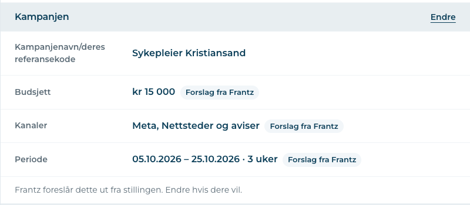
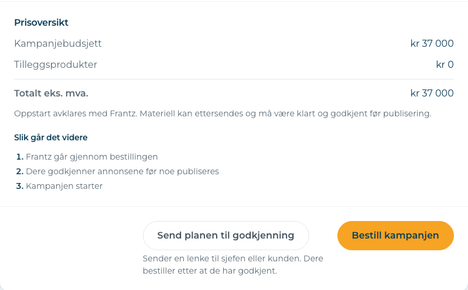
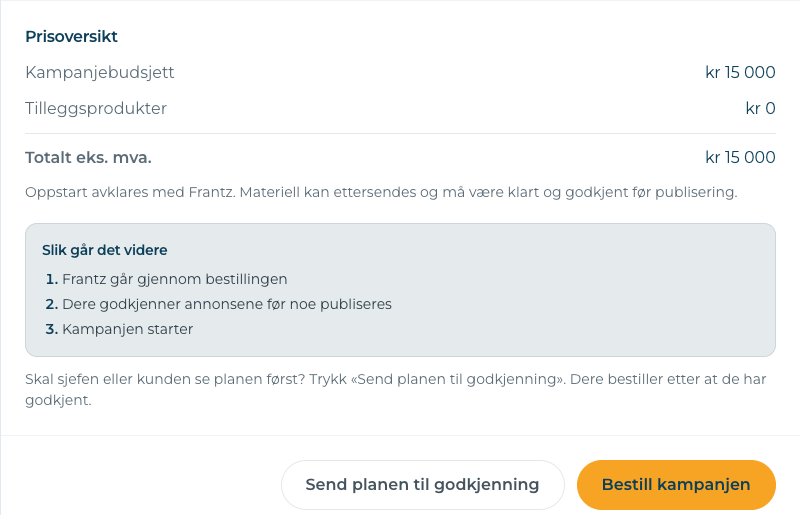
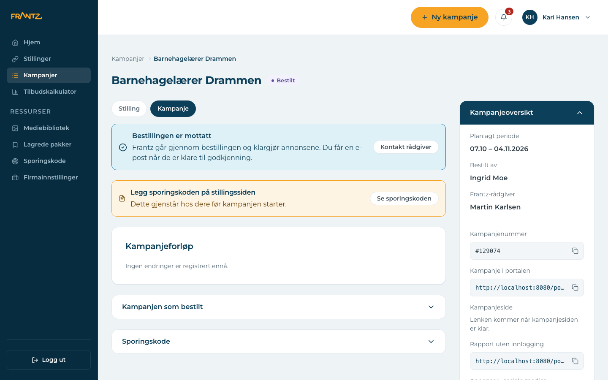
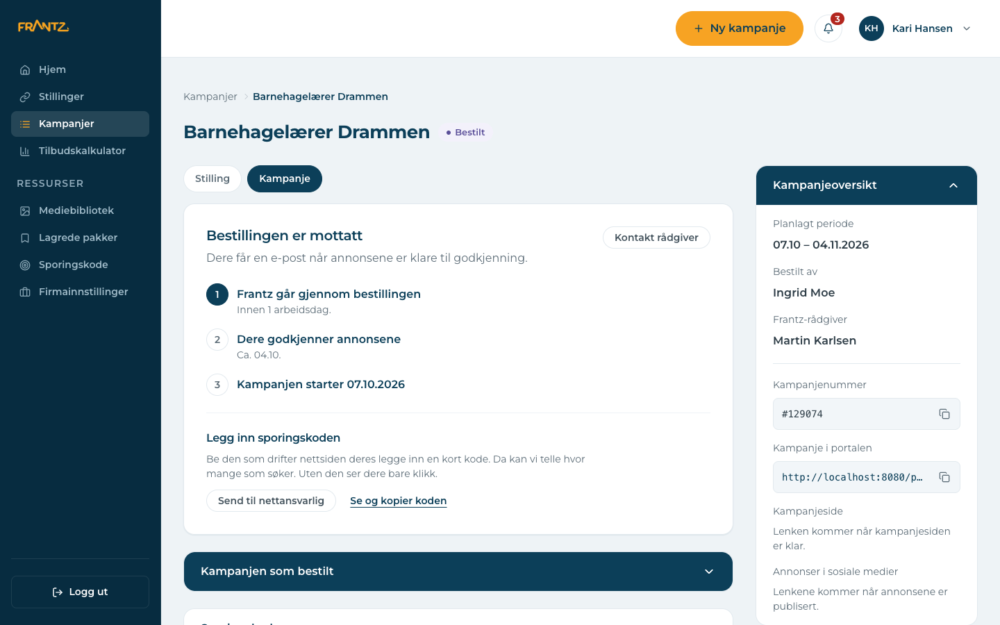
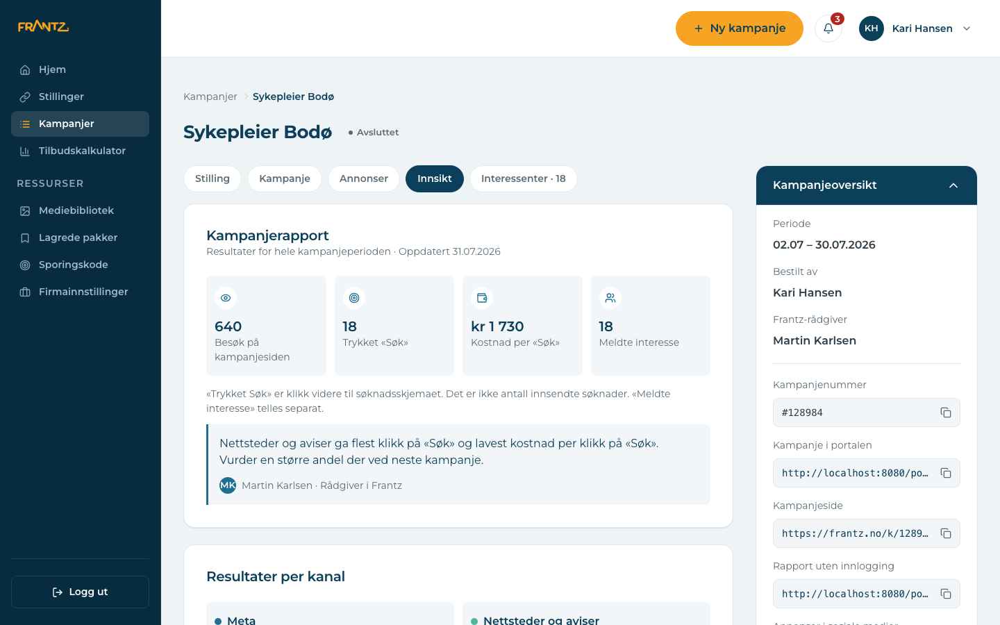
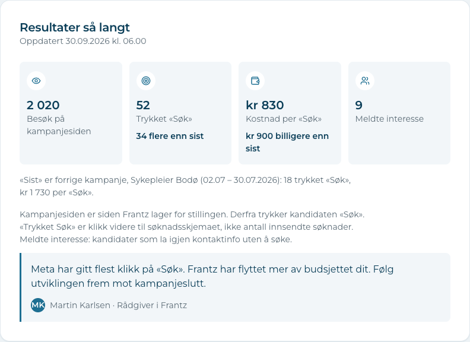
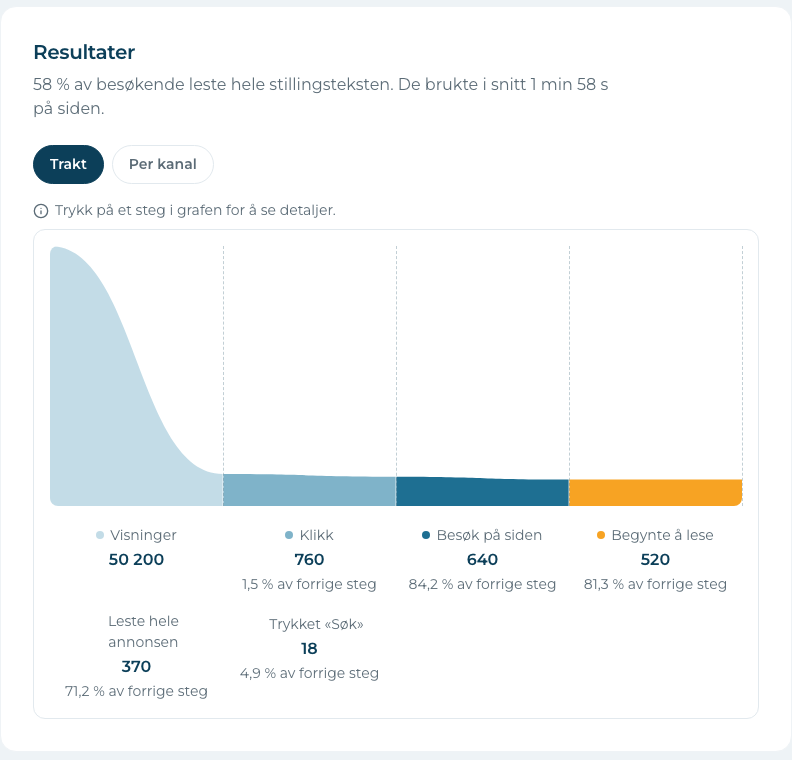
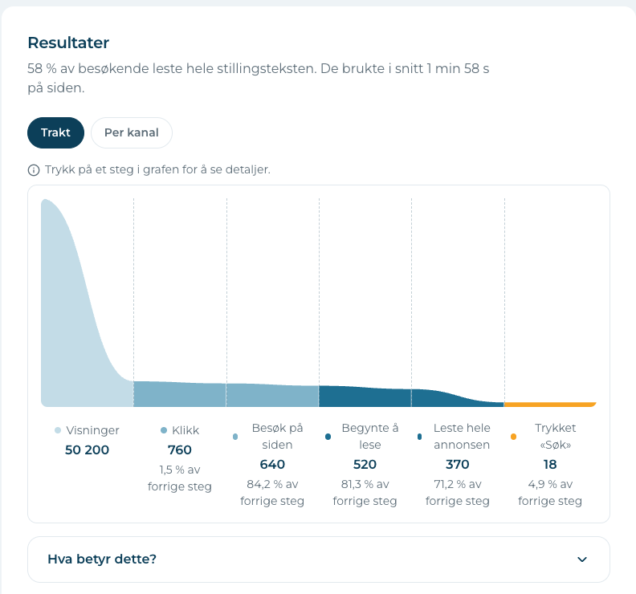

Endringer 28.10
Det du godkjente i gjennomgangen, og det som ble lagt til etterpå. Alt ligger på branchen atelier/fixes. Gammel versjon står til venstre, ny til høyre.
1. Ny kampanje: Frantz foreslår
portal/ny-kampanje.html
- Når dere limer inn en lenke, fyller Frantz inn budsjett, kanaler og periode.
- Hvert forslag er merket «Forslag fra Frantz». Dere kan endre det.
- Foreslått budsjett er aldri over kr 15 000. Det går heller aldri under minstebeløpet for kanalene.

2. Ny kampanje: prisoversikt og bestillingsknapper
portal/ny-kampanje.html
- «Slik går det videre» ligger nå i en farget boks.
- Teksten om godkjenning er flyttet opp i prisoversikten.
- De to knappene står alene på én linje, like høye.


3. Bestilt: ett statuskort
portal/kampanje-bestilt.html
- To bokser er slått sammen til ett kort med tre steg: Frantz sjekker, dere godkjenner, kampanjen starter.
- Sporingskoden er en del av kortet, ikke et eget varsel.
- Mangler annonser, kommer et eget banner.


4. Rapport: sammenlign med forrige kampanje
portal/campaign.html (Innsikt-fanen)
- Tallene viser hvor mye bedre eller dårligere det går enn kundens forrige kampanje.
- 29.10: Kortene har nå bare én kort linje, f.eks. «34 flere enn sist». Hvilken kampanje «sist» er, står én gang under kortene.


5. Rapport: trakten viser alle 6 steg
portal/rapport.html
- Før var grafen tegnet for 4 steg. De to siste stegene havnet under, uten graf.
- Nå har alle 6 steg sin egen kolonne i grafen.


6. Mindre endringer
- Omvisningen starter bare når dere trykker «Vis meg rundt» på Hjem.
- Filer dere drar inn i Ny kampanje sorteres selv: bilder og video blir ferdige annonser, PDF og Word blir vedlegg.
- «dere» brukes overalt, ikke «du».
- Kopierfelt har ett felles utseende overalt.